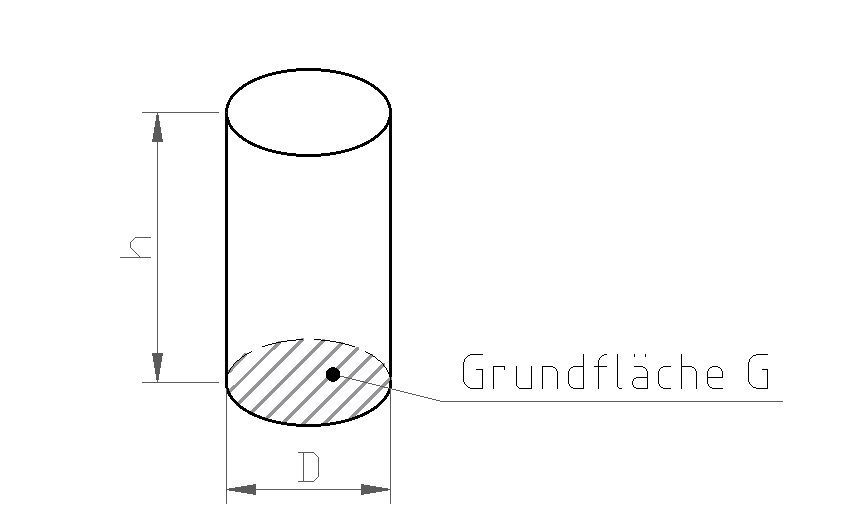

3 Zylinder
Zum Zeichnen und Rechnen am Papier. Braucht Internet.
Zuerst die Pflicht-Aufgaben (★★). Die Extra-Aufgabe (★★★) am Ende ist freiwillig.
Tippe in die Kästchen. Dann tippe auf „Prüfen“.
Grün = richtig, Rot = schau noch einmal.
Zylinder
Ein Zylinder ist ein runder Körper, wie eine Dose oder ein Stück Rundstahl. Die Grundfläche ist ein Kreis.

Wie beim Prisma: V = G · h
Grundfläche (Kreis): G = D² · π : 4
Umgeformt: h = V : G und D = √(G · 4 : π)
So tippst du am Taschenrechner:
π = Taste π (am Handy oft unter „wissenschaftlich“ oder beim Drehen ins Querformat). Kein π? Nimm 3,14.
√ = Taste √, dann eine Klammer: √(28 · 4 : π)
Hoch 2 = Taste x² oder die Zahl zweimal malnehmen.
Runde auf 2 Kommastellen (mehr Stellen gehen auch).
Aufgabe 1 ★★
Zylinder: D = 50 mm, h = 300 mm. Berechne G und V.
mm³ → cm³ ist : 1000 (1000 mm³ = 1 cm³).
| G = | mm² |
| V = | cm³ |
Aufgabe 2 ★★
Zylinder: G = 28 cm², h = 1,4 dm. Rechne Schritt für Schritt.
1 cm² = 100 mm². 1 dm = 10 cm. 1000 cm³ = 1 dm³.
| 1. G in mm²: | mm² |
| 2. D = √(G · 4 : π) Tippe: √ ( 2800 · 4 : π ) = | mm |
| 3. h in cm: | cm |
| 4. V = G · h = | cm³ |
| 5. V in dm³: | dm³ |
Extra: Wenn du noch Zeit hast ★★★
Pflicht geschafft! Du darfst hier aufhören.
Diese Aufgabe ist freiwillig. Hier wechseln die Einheiten oft.
Aufgabe 3 ★★★
Zylinder: Berechne, was fehlt. Achte auf die Einheiten!
Zylinder 3: 0,071 m = 7,1 cm, 986 mm = 98,6 cm. 1000 cm³ = 1 dm³.
| Zylinder 2 | |
|---|---|
| D | mm |
| G | cm² |
| h | 600 mm |
| V | 2713 cm³ |
| Zylinder 3 | |
|---|---|
| D | 0,071 m |
| G | cm² |
| h | 986 mm |
| V | dm³ |